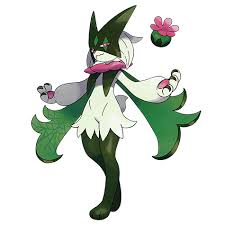

Guia dos Pokemon

Meowscarada
Descrição
Meowscarada é um Pokémon de tipos Planta/Noturno introduzido na 9ª Geração (Paldea), sendo a forma final evoluída de Sprigatito. Conhecido como o Pokémon Magovento, é um bípede elegante baseado em um mágico/mímico, orgulhoso, apegado ao treinador e hipersensível. Destaca-se pela sua alta velocidade e ataque, utilizando a habilidade de camuflagem de sua capa reflexiva e seu golpe exclusivo, Flower Trick (Truque das Flores), para atacar com precisão.
Características Principais:
- Design e Aparência: Um gato humanóide com máscara de "estrela" no rosto, capa verde e pelagem reflexiva que camufla sua cauda, dando a ilusão de que a flor em sua cauda flutua.
- Comportamento: Muito apegado ao treinador, pode ser ciumento se receber menos atenção.
- Habilidades e Estilo de Luta: Atacante rápido (Swift Attacker) do tipo físico. Sua habilidade oculta é Protean (Mutante), que muda seu tipo para o do movimento que utiliza.
- Movimento Assinatura: Flower Trick (Truque das Flores) - um movimento do tipo Planta que nunca erra e causa dano crítico.
- Fraquezas: Possui fraqueza 4x para o tipo Inseto, além de Fogo, Veneno, Voador e Fada.
- Pokémon UNITE: No jogo, atua como um Velocista (Speedster) corpo a corpo.
- Meowscarada é amplamente reconhecido pela sua versatilidade em combate e design temático de mágico, sendo uma escolha popular tanto em jogos da série principal quanto em spin-offs como Pokémon UNITE e TCG.